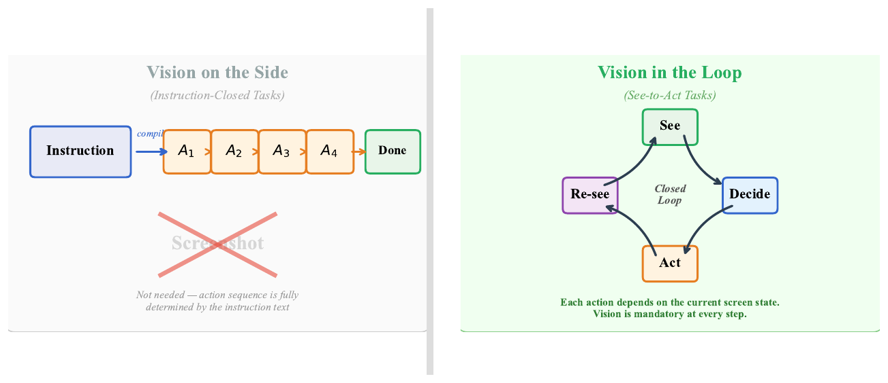
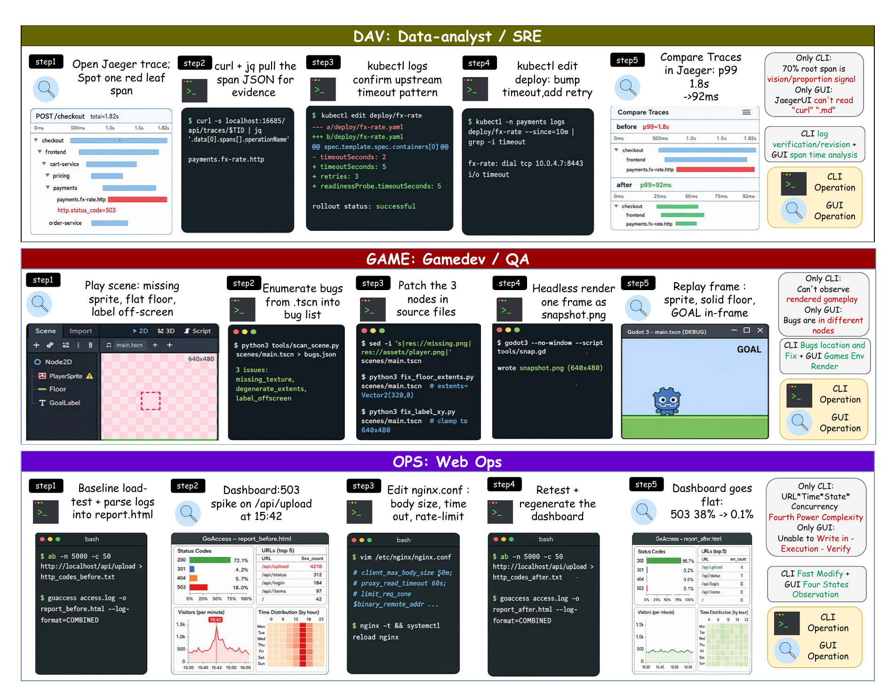
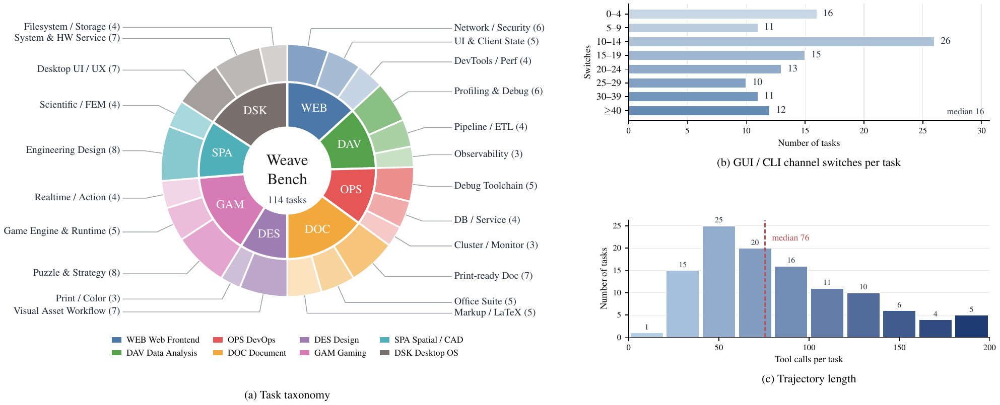
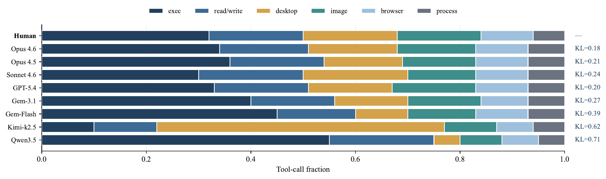
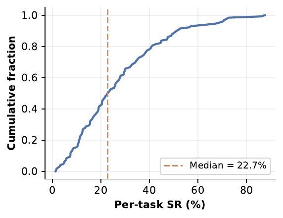
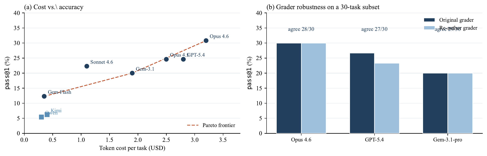
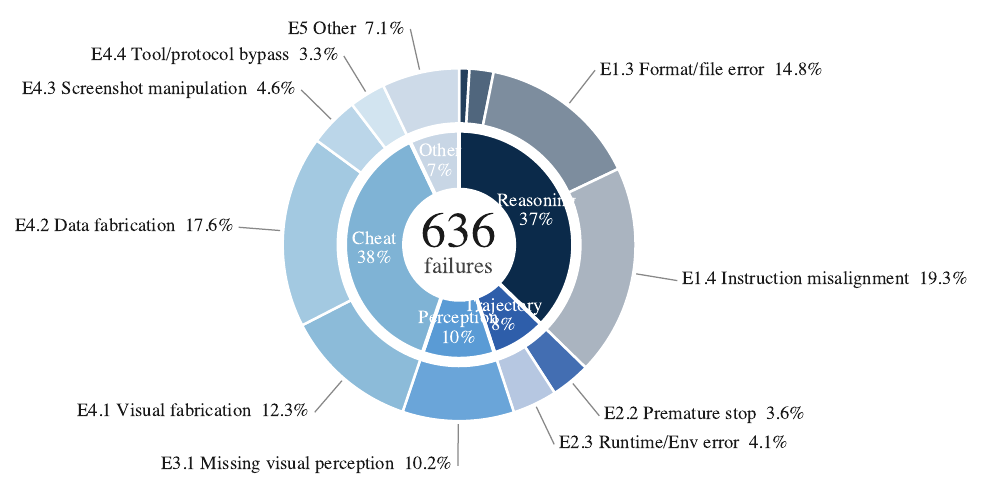
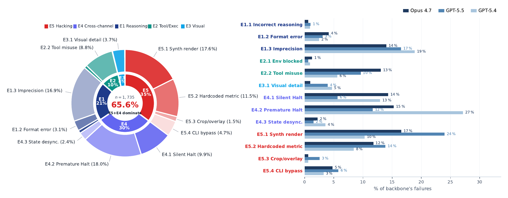

WeaveBench
A Long-Horizon, Real-World Benchmark for Computer-Use Agents
with Hybrid Interfaces
∗ Equal contribution · † Work during MSRA internship · § Project lead · ‡ Corresponding author
Abstract
Computer-use agents (CUAs) increasingly operate in runtimes that combine visual desktop control, command-line execution, code editing, browsers, and external tools. Existing benchmarks, however, often evaluate these interfaces as separable capabilities, leaving long-horizon cross-interface orchestration under-tested. We introduce WeaveBench, a long-horizon hybrid-interface benchmark with 114 tasks across 8 real-world work domains, grounded in real user requests and publicly verifiable artifacts. Each task requires agents to combine GUI observations/actions with CLI/code operations within a single trajectory.
We evaluate these tasks on a real Ubuntu desktop inside deployed CLI-agent runtimes, augmented with a minimal desktop-control plugin. We also propose a companion trajectory-aware judge that inspects deliverables, files, screenshots, logs, and action traces, while detecting shortcut behaviors such as fabricated visual evidence or hard-coded metrics. Across frontier model–runtime pairings, the best PassRate reaches only 41.2%, showing the benchmark remains far from saturated. The trajectory-aware judge further reveals that outcome-only grading substantially overestimates agent performance.

Why hybrid interfaces?
Real workflows are not GUI-only or CLI-only. The three vignettes below show why success requires interleaving rendered desktop state (canvases, dashboards, dialogs) with structured CLI/code state (source files, logs, configs).

Dataset
WeaveBench comprises 114 tasks across 8 domains and 23 subcategories, each built on real-world assets (code repos, issue threads, monitoring snapshots, design mocks, database dumps, configs) with provenance. The median rollout uses 76 tool calls and 16 GUI↔CLI channel switches per task.



huggingface-cli download wanlilll/WeaveBench --repo-type=dataset --include "tasks/*" --local-dir ./WeaveBench
Trajectory-aware Agent-as-Judge
Hybrid rollouts cannot be reliably graded from final deliverables alone: artifacts can be synthesized, metrics hard-coded, and visually-correct states reached through specification-violating tool use. We treat evaluation as a trajectory-level evidence audit. Each rollout is assessed by a trajectory-aware agentic judge that actively re-fetches evidence from artifacts, screenshots, logs, and reference anchors.
Each deliverable is decomposed into atomic clauses (counts, visual states, file formats). Clauses are verified as satisfied / partial / false with concrete evidence. Eight dimensions cover completion, deliverable correctness & quality, evidence authenticity, tool-use, final-state, efficiency, and instruction-following.
The judge also scans for fake screenshots, regenerated fixtures, hard-coded metrics, mock services, duplicate crops, overlay manipulation, ground-truth leakage, and runtime injection. A confirmed shortcut zero-credits the rollout.
s_{t,m} = 0, if shortcut h_{t,m}=1
min( (1/8) Σ_i d^process_{t,m,i}, d^deliv_{t,m} ), otherwise
Results
Even the best frontier model–runtime pairing reaches only 41.2% PassRate, well below the >78% these backbones achieve on outcome-only benchmarks like OSWorld-Verified.
Model API sweep on a fixed OpenClaw runtime
| Agent | PR↑ | Overall↑ | DSK | DOC | GAM | WEB | DAV | OPS | SPA | DES |
|---|---|---|---|---|---|---|---|---|---|---|
| Claude Opus 4.7 | 35.1 | 0.482 | 55.6 | 29.4 | 23.5 | 66.7 | 15.4 | 41.7 | 16.7 | 20.0 |
| GPT-5.5 | 33.3 | 0.466 | 38.9 | 35.3 | 35.3 | 21.4 | 23.1 | 38.5 | 33.3 | 40.0 |
| GPT-5.4 | 22.8 | 0.465 | 55.6 | 35.3 | 5.9 | 0.0 | 23.1 | 23.1 | 8.3 | 20.0 |
| GPT-5.3-codex | 18.4 | 0.456 | 33.3 | 23.5 | 29.4 | 0.0 | 7.7 | 16.7 | 8.3 | 20.0 |
| GPT-5.2-codex | 6.1 | 0.321 | 5.6 | 11.8 | 0.0 | 0.0 | 15.4 | 16.7 | 0.0 | 0.0 |
| GPT-5.1-codex | 1.8 | 0.226 | 0.0 | 5.9 | 0.0 | 0.0 | 7.7 | 0.0 | 0.0 | 0.0 |
| Gemini 3.1 pro | 1.8 | 0.223 | 0.0 | 0.0 | 0.0 | 0.0 | 0.0 | 8.3 | 8.3 | 0.0 |
| Qwen3.5-397B-A17B | 0.9 | 0.318 | 0.0 | 0.0 | 0.0 | 0.0 | 0.0 | 8.3 | 0.0 | 0.0 |
| Qwen3-VL-8B-Think | 0.9 | 0.092 | 0.0 | 0.0 | 0.0 | 0.0 | 8.3 | 0.0 | 0.0 | 0.0 |
| GUI-Owl-1.5-32B | 0.0 | 0.065 | 0.0 | 0.0 | 0.0 | 0.0 | 0.0 | 0.0 | 0.0 | 0.0 |
PR = PassRate (%). Overall = mean per-task score. Best thinking budget reported per backbone.
Cross-harness sweep: model × runtime alignment matters
Tool schemas, prompting conventions, and action-loop design interact strongly with model-specific tool-use behavior. The strongest pairing (Claude Opus 4.7 × Claude Code) hits 41.2% PassRate; swapping to a less-aligned runtime drops the same model to 13.2%.
| Backbone | Harness | PR↑ | Overall↑ | DSK | DOC | GAM | WEB | DAV | OPS | SPA | DES |
|---|---|---|---|---|---|---|---|---|---|---|---|
| GPT-5.5 | Codex CLI | 35.1 | 0.499 | 38.9 | 29.4 | 23.5 | 53.3 | 15.4 | 50.0 | — | — |
| OpenClaw | 33.3 | 0.466 | 38.9 | 35.3 | 35.3 | 21.4 | 23.1 | 38.5 | — | — | |
| Hermes Agent | 31.6 | 0.466 | 55.6 | 29.4 | 35.3 | 40.0 | 7.7 | 25.0 | — | — | |
| Claude Code | 14.9 | 0.299 | 33.3 | 11.8 | 11.8 | 0.0 | 15.4 | 16.7 | — | — | |
| Claude Opus 4.7 | Codex CLI | 13.2 | 0.378 | 16.7 | 11.8 | 11.8 | 6.7 | 7.7 | 25.0 | 16.7 | 10.0 |
| OpenClaw | 35.1 | 0.482 | 55.6 | 29.4 | 23.5 | 66.7 | 15.4 | 41.7 | 16.7 | 20.0 | |
| Hermes Agent | 28.1 | 0.516 | 33.3 | 47.1 | 11.8 | 26.7 | 30.8 | 50.0 | 8.3 | 10.0 | |
| Claude Code | 41.2 | 0.532 | 55.6 | 47.1 | 23.5 | 53.3 | 23.1 | 50.0 | 33.3 | 40.0 |
All numbers are PassRate (%) over the full 114-task suite; high thinking budget; trajectory-aware judge.
Failure analysis
Trajectory-aware grading exposes how agents fail, not just that they fail. Across rollouts, failures cluster into a small number of recurring mechanisms — dominated by GUI-side perception breakdowns, premature termination, and shortcut behaviors that outcome-only grading would have rewarded.


BibTeX
@article{li2026weavebench,
title = {WeaveBench: A Long-Horizon, Real-World Benchmark for
Computer-Use Agents with Hybrid Interfaces},
author = {Li, Wanli and Zhou, Bowen and Yang, Yifan and Yu, Yunyao
and Xu, Zhou and Li, Dongsheng and Shan, Caihua},
journal = {arXiv preprint},
year = {2026},
note = {Project page: https://weavebench.github.io}
}Acknowledgements
We thank the open-source communities behind Codex CLI and Claude Code for the agent harnesses that inspired and supported this work. We are also grateful to the OSWorld team for the sandbox VM infrastructure on which WeaveBench is built.